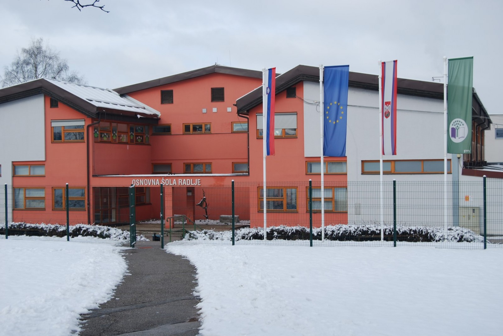

Ustanovitelj OŠ Radlje ob Dravi
Ustanovitelj javnega vzgojno-izobraževalnega in vzgojno-varstvenega zavoda Osnovna šola Radlje ob Dravi je Občina Radlje ob Dravi. Ustanovljen javni zavod posluje pod imenom Osnovna šola Radlje ob Dravi. Sedež ustanovitelja je Mariborska cesta 7, 2360 Radlje ob Dravi.
Šolski okoliš OŠ Radlje ob Dravi
OŠ Radlje zajema učence Občine Radlje ob Dravi ter obsega naslednje kraje, vasi in zaselke:
Zg. Vižinga, Sv. Trije Kralji, Št. Janž, Vas, Sp. Vižinga, Dobrava, Vuhred, Sp. Orlica, Sv. Anton.
Šolski prostor
Obsega stavbo šole, telovadnico,
igrišče za pouk športne vzgoje
, zunanje površine, zelenice in asfaltne površine.
Na vseh teh površinah šola prevzema odgovornost za učence v času pouka, ko se na njih odvijajo izobraževalno- vzgojne dejavnosti.
Organizacijska shema šole
Ravnatelj: dr. Damjan Osrajnik
Pomočnica ravnatelja za šolo: Simona Ternik
Pomočnica ravnatelja za vrtec: Špela Rus
Organi zavoda:
-Svet zavoda
-Svet staršev
-Strokovni organi šole:
-učiteljski zbor
-oddelčni učiteljski zbor
-strokovni aktivi
-razredniki